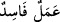

atalarla övünmenin hiçbir faydası yoktur.
Sa‘dî der ki:
Ken‘an gibi tabîat hünersiz olur
Peygamber evladı olması kıymetini artırmaz
Aslını nesebini gösterme; bir hünerin varsa onu göster
Gül dikenden, İbrâhim putperest Âzer’den oldu.
Bir hadiste şöyle buyrulmuştur: “Ey Hâşimoğulları, insanlar bana amelleriyle
gelirken siz bana nesebinize güvenerek gelmeyin.”[133] Bu ifadenin maksadı, insanlar
amelleriyle gelirken, bazılarının Hz. Peygamber katında nesebleriyle iftihâr etmelerini
kınamaktır.
Hâşimî olmanın ne faydası dokunur sana,
Nefsinin ahlâkı Bâhile’den olduktan sonra,
Bâhile, âdiliği ile meşhûr bir kabile olup ölü kemiklerinin iliklerini yerlerdi.
“Çünkü onun yaptığı kötü bir iştir.” Bu ifâdenin aslı “Çünkü o sâlih olmayan iş
sahibidir.” şeklindedir. Nûh (a.s.)’ın oğlu devamlı olarak kötü işler yaptığı için
mübalağa maksadıyla âyette bizzat kendisi kötü amel yerine konulmuştur.
Âyette “” buyrulmamıştır. Halbuki fâsid ile gayr-i sâlih/yaramaz birbirinden
ayrılmayan iki şeydir. Bu, kurtuluşun ancak sâlih işler yapmakla mümkün olduğunu
bildirmek içindir.
Fakir (Bursevî) der ki: Âyet üzerinde düşündüğüm sırada gönlüme başka bir mânâ
daha doğdu: Âyetteki “amel”, kesb ve fiil mânâsınadır. Âyetin mânâsının şöyle olması
uzak bir ihtimal değildir: “O, sâlih olmayan/yaramaz bir kazançtır.” Şu hadiste çocuğa
“kesb/kazanç” denilmektedir: “Kişinin yediği en temiz şey, kendi kazancından
yediğidir. Kişinin evlâdı da kazancındandır.”[134] Başka bir hadiste de: “Sen de malın
da babana âidsiniz.”[135] buyrulmuştur.
“O halde hakkında bilgin olmayan” gerçekleşmesinin doğru ve hikmete uygun
olduğunu kesin olarak bilmediğin “bir şeyi benden isteme.” Nûh (a.s.)’ın seslenişinde
talep ve isteme mânâsı bulunduğu içindir ki bu sesleniş “istemek” olarak ifâde
edilmiştir. Yâni duruma apaçık bir şekilde vâkıf olduğuna göre bilmediğin bir şeyi
benden isteme!
“Ben sana câhillerden olmamanı tavsiye ederim.” Câhillerden olmanı kötü
gördüğümden sana öğüt veririm.
Âyette daha evlâ olan bir davranışın terk edilmesine “câhillik” denilmiştir. Çünkü
daha önce 40. âyette hakkında hüküm verilenlerin istisnâ edilmiş olması Nûh (a.s.)’a
içinde bulunduğu durumu göstermiş, böyle bir istekte bulunmaktan müstağni kılmıştır.
Ama evlâd sevgisi Nûh (a.s.)’ı bundan alıkoymuş, böylece iş ona karışık gelmişti. İşte